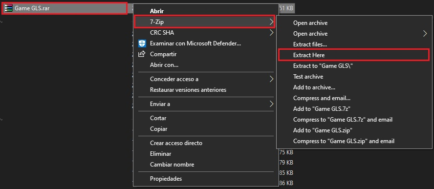

Te invitamos a disfrutar de esta propuesta de juego interactivo, creada por estudiantes de grado once para el día de la ciencia 2020.
Instrucciones
Recomendaciones: Tener instalado previamente 7zip de no tenerlo clickear el siguiente enlace:https://www.7-zip.org/
Hacer buena lectura del texto encontrado en el apartado de bachillerato. La aplicacion solo puede ser usada en computadores.
Preguntas Frecuentes: ¿La descarga tendrá virus? No se preocupe la aplicación no tiene ningún tipo de virus ya que fue creada por nosotros mismos.

Paso 1: Hallará en el final de la página un botón como el que se encuentra en la imagen anterior, clickearlo.

Paso 2: Éste lo llevará a otra página en la cual encontrara un botón como el mostrado anteriormente
al clickearlo comenzará la descarga
Paso 3: Al terminar de descargar el archivo ir a la ubicación donde este fue guardado.

Paso 4: Aquí se hara click derecho sobre la carpeta llamada Game GLS.rar, al abrirse el menú desplegable seleccionar el que dice 7zip para después seleccionar el apartado que dice "EXTRACT HERE (extraer aquí)"

Paso 5: Al terminar este proceso quedará una carpeta llamada de la misma forma, entra en esta.
Paso 6: Dentro de ésta carpeta encontrarás una carpeta llamada Win32.exe entra en esta.
Paso 7: Dentro de ésta carpeta busca en la parte inferior un archivo llamado untilted.exe, da click sobre éste ya que este es el juego.
Paso 8: Dar click en jugar. El objetivo del juego es conseguir los 35 puntos coleccionando las monedas y coronas distribuidas en el mapa o contestando una de las preguntas correctamente las cuales se activarán al tocar los patos. Diviertete.
¡Juguemos!